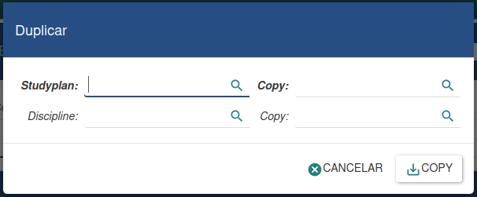
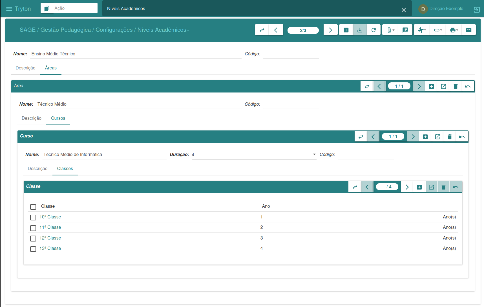
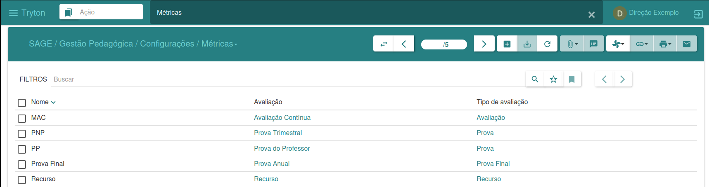

Settings
The purpose of the settings menu is to support the enrollment, monitoring, and evaluation of students by the institution's pedagogical area.
This menu is essential for configuring and customizing the system according to the needs, norms, and rules in which the institution is involved, thus ensuring efficiency and compliance with pedagogical policies and processes.
Duplicate
The duplication wizard allows you to create copies of information from one study plan to another. This feature makes it possible to duplicate both subjects and assessments from one plan to another.
To duplicate subjects, you only need to specify the desired study plans.
If you want to duplicate assessments, you will also need to specify the subjects for which you want to make the copy.

After providing this information, simply click "Copy" to duplicate it or "Cancel" to undo the process. This tool simplifies the process of replicating information between different academic years for specific study plans, providing greater speed and efficiency in academic management.
Academic Levels
The academic levels interface allows you to manage the levels offered by the institution.
In it, you can view all existing levels, add new levels, and define their specific characteristics.

Classroom
Classroom management is performed in this interface, allowing the registration of new classrooms. To create a classroom, simply click "New," enter the necessary data, and then click "Save" to complete the process.

Metrics
Metrics (or ratings) management is done in this interface, where you can view all existing metrics. To create a new metric, simply click "New," enter the necessary data, and then click "Save."
Each metric contains information such as rating, rating type, and metric name.

School Year
The academic year interface allows for complete management of academic periods.
In it, you can define trimesters, phases and admission criteria, study plans, and create new classes.
By clicking "New," you can create a new academic year, specifying the desired start and end dates.

-
To define the quarterly periods, click on the "Quarters" tab. By clicking "New", add the desired academic periods.
-
To define the admission phases, click on the "Phases" tab. In "New", add the phases and their respective admission criteria.
-
To define the study plans for the academic year, click on the "Study Plans" tab. In "New", include new plans, as well as the subjects and assessments that will be part of each one.
In addition, it is possible to create new classes directly through this interface, if you do not wish to perform this action through the Classes menu.
These resources provide comprehensive and integrated management of the key elements associated with the academic year.
Observation
In the settings menu, there is a sub-menu called Pre-Configured, where some ready-to-use settings are available.
Other settings can be added as needed by the institution.